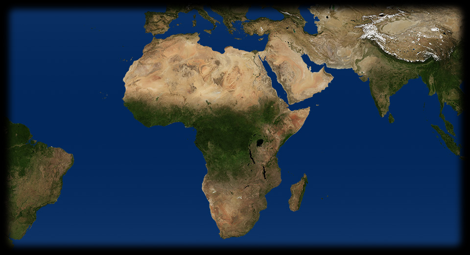
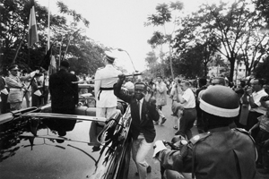
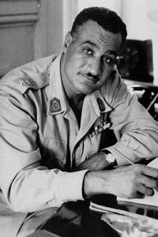

- 260 460
- 95 510
- 55 330
- 260 430
- 220 285
- 215 535
- 285 535
- 385 480
-

CONGO
Una delle ultime immagini del colonialismo belga: il re Baldovino nel 1960 visita il Congo, che di lì a poco diventerà una repubblica democratica. - 
EGITTO
Un ritratto di Gamal Abdel Nasser, artefice dell'indipendenza egiziana e presidente della nazione dopo il breve governo provvisorio del nubiano Mohhammad Najib. ALGERIA
Il primo luglio 1962 un referendum sancisce l'indipendenza dell'Algeria dalla Francia. E' la conclusione di una guerra che aveva provocato oltre duecentomila morti, e aveva avuto ripercussioni anche in Francia, con una lunga serie di attentati. I fatti algerini diventano il simbolo del processo di decolonizzazione, che in Africa si svolge in un arco di tempo molto più lungo.CONGO
Leader del movimento indipendentista nel Congo Belga e primo primo ministro del Congo libero è Patrice Lumumba, un congolese colto, impiegato nell'amministrazione coloniale. Il Belgio concede l'indipendenza nel 1960, Lumumba governa con l'appoggio dell'Unione Sovietica, ma la situazione è subito esplosiva: il contesto internazionale di Guerra fredda, il ricco sottosuolo del Congo e della regione del Katanga - controllata dalla potente Union Minière du Haut-Katanga - che a un mese dall'indipendenza proclama la secessione, le ambizioni politiche della neonata classe dirigente africana, provocano l'assassinio di Lumumba, la degenerazione del nuovo Stato nel caos, la salita al potere del generale capo dell'esercito Mobutu Sese Seko. Fortemente sostenuto dagli Stati Uniti, Mobutu instaura nel paese – che rinomina Zaire – un regime autoritario che durerà dal 1965 al 1997. Mobutu diventerà uno degli uomini più ricchi del mondo.LIBERIA
La Liberia è l'unico Stato africano, insieme all'Etiopia, che ha mantenuto l'indipendenza durante tutto il periodo coloniale. A differenza dell'Etiopia, un Impero con una struttura e un'organizzazione indigena, la Liberia è uno Stato formato dai discendenti degli schiavi neri importati negli Stati Uniti nei secoli XVII-XIX. Tornati in Africa nella seconda metà dell'Ottocento, i discendenti danno vita a uno Stato autonomo con un governo di tipo occidentale, dalla grande forza simbolica.UGANDA
Nel 1962 si ha il passaggio dell'Uganda da protettorato inglese a repubblica indipendente. Inizia il processo di formazione dello Stato, che ridefinisce i rapporti tra i 65 gruppi etnici presenti all'interno della neonata nazione. Nello stesso anno raggiungono l'indipendenza anche i vicini Ruanda e Urundi (Burundi).KENYA
Il Kenya acquisisce l'indipendenza nel 1963. La transizione non è pacifica, poiché i coloni inglesi possiedono le terre migliori e non vogliono abbandonare il paese. Le due forze nazionaliste sono rappresentate da Jomo Kenyatta e dalla società segreta dei Mau-Mau. Il primo si batte per l'indipendenza con metodi politici, i secondi in modo violento e apertamente ostile ai coloni. La rivolta armata scoppia nel 1952 e provoca una dura repressione inglese. Poi, le elezioni del 1961 riportano una schiacciante vittoria per il partito nazionalista di Kenyatta: nel 1963 i britannici concedono l'indipendenza.RHODESIA
Dai territori britannici dell'Africa Sudorientale nascono nel 1964 il Malawi; nel 1964, dopo scontri e repressioni violenti, lo Zambia; nel 1965 la Rhodesia del Sud. Quest'ultimo è uno Stato profondamente razzista, proclamato dai coloni bianchi, che teorizzano la superiorità della razza bianca e danno pieno appoggio alla vicina Repubblica del Sudafrica, governata con la politica dell'Apartheid.